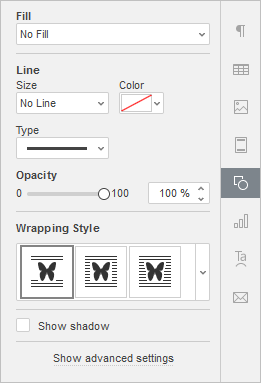

Umetanje SmartArt objekata
SmartArt grafika se koristi za kreiranje vizuelnog prikaza hijerarhijske strukture izborom rasporeda koji najviše odgovara. Možete umetati SmartArt objekte ili uređivati one koji su dodati u editorima trećih strana.
Da biste umetnuli SmartArt objekat,
- pređite na karticu Insert,
- kliknite na dugme SmartArt,
- pređite mišem preko jednog od dostupnih stilova rasporeda, npr. List ili Process,
- izaberite jedan od dostupnih tipova rasporeda sa liste koja se pojavljuje desno od označene stavke menija.
SmartArt objekat možete sačuvati kao sliku na vašem hard disku koristeći opciju Save as picture u kontekstnom (desni klik) meniju.
SmartArt podešavanja možete prilagoditi u desnom panelu:
Imajte u vidu da se podešavanja boje, stila i tipa oblika mogu prilagođavati pojedinačno.

-
Fill – koristite ovaj odeljak za izbor ispune SmartArt objekta. Dostupne su sledeće opcije:
-
Color Fill – izaberite ovu opciju da biste definisali jednobojnu ispunu unutrašnjeg prostora izabranog SmartArt objekta.

Kliknite na polje sa bojom ispod i izaberite potrebnu boju iz dostupnih paleta boja ili definišite proizvoljnu boju:
-
Gradient Fill – koristite ovu opciju da popunite oblik sa dve ili više boja koje se postepeno prelaze jedna u drugu. Prilagodite gradijent bez ograničenja. Kliknite na ikonu Shape settings da biste otvorili meni Fill na desnoj bočnoj traci:

Dostupne opcije menija:
-
Style – izaberite između Linear ili Radial:
- Linear se koristi kada želite da se boje prelazno menjaju s leva na desno, odozgo nadole ili pod bilo kojim uglom u jednom smeru. Prozor za pregled Direction prikazuje izabrani smer gradijenta; kliknite na strelicu da izaberete unapred definisan smer. Koristite podešavanje Angle za precizan ugao gradijenta.
- Radial se koristi kada gradijent polazi iz centra i širi se ka ivicama.
-
Gradient Point predstavlja tačku prelaza sa jedne boje na drugu.
- Koristite dugme Add Gradient Point ili klizač da biste dodali tačku gradijenta. Možete dodati do 10 tačaka gradijenta. Svaka nova tačka neće uticati na postojeći izgled gradijenta. Koristite dugme Remove Gradient Point da biste uklonili određenu tačku.
- Koristite klizač da promenite položaj tačke gradijenta ili unesite Position u procentima za precizno pozicioniranje.
- Da biste dodelili boju tački gradijenta, kliknite na tačku na klizaču, a zatim kliknite na Color i izaberite željenu boju.
-
Style – izaberite između Linear ili Radial:
-
Picture or Texture – izaberite ovu opciju da koristite sliku ili unapred definisanu teksturu kao pozadinu SmartArt objekta.

- Ako želite da koristite sliku kao pozadinu SmartArt objekta, možete dodati sliku From File izborom sa lokalnog računara, From URL unošenjem odgovarajuće URL adrese u otvoreni prozor ili From Storage izborom slike sa vašeg portala.
-
Ako želite da koristite teksturu kao pozadinu SmartArt objekta, otvorite meni From Texture i izaberite odgovarajući unapred definisan uzorak.
Trenutno su dostupne sledeće teksture: canvas, carton, dark fabric, grain, granite, grey paper, knit, leather, brown paper, papyrus, wood.
-
Ako izabrana Picture ima manje ili veće dimenzije od SmartArt objekta, možete izabrati podešavanje Stretch ili Tile iz padajuće liste.
Opcija Stretch omogućava prilagođavanje veličine slike tako da u potpunosti popuni SmartArt objekat.
Opcija Tile omogućava prikaz dela veće slike zadržavajući originalne dimenzije ili ponavljanje manje slike zadržavajući originalne dimenzije preko površine SmartArt objekta kako bi se prostor u potpunosti popunio.
Napomena: svaka izabrana Texture popunjava prostor u potpunosti, ali po potrebi možete primeniti efekat Stretch.
-
Pattern – izaberite ovu opciju da popunite SmartArt objekat dvobojnim uzorkom sastavljenim od pravilno ponavljanih elemenata.

- Pattern – izaberite jedan od unapred definisanih uzoraka iz menija.
- Foreground color – kliknite na ovo polje boje da promenite boju elemenata uzorka.
- Background color – kliknite na ovo polje boje da promenite boju pozadine uzorka.
- No Fill – izaberite ovu opciju ako ne želite da koristite ispunu.
-
Line – koristite ovaj odeljak da promenite širinu, boju ili tip linije SmartArt objekta.
- Da biste promenili širinu linije, izaberite jednu od dostupnih opcija iz padajuće liste Size. Dostupne opcije su: 0.5 pt, 1 pt, 1.5 pt, 2.25 pt, 3 pt, 4.5 pt, 6 pt. Alternativno, izaberite opciju No Line ako ne želite da koristite liniju.
- Da biste promenili boju linije, kliknite na polje sa bojom ispod i izaberite odgovarajuću boju.
- Da biste promenili tip linije, izaberite odgovarajuću opciju iz padajuće liste (puna linija je podrazumevana, ali je možete promeniti u neku od dostupnih isprekidanih linija).
- Da biste promenili providnost linije, unesite željenu vrednost ručno ili koristite odgovarajući klizač.
- Wrapping Style – koristite ovaj odeljak da izaberete stil prelamanja teksta među dostupnim opcijama: inline, square, tight, through, top and bottom, in front, behind (za više informacija pogledajte opis naprednih podešavanja ispod).
- Show shadow – označite ovo polje da bi SmartArt objekat bacao senku.
-
Color Fill – izaberite ovu opciju da biste definisali jednobojnu ispunu unutrašnjeg prostora izabranog SmartArt objekta.
Kliknite na link Show advanced settings da biste otvorili napredna podešavanja.